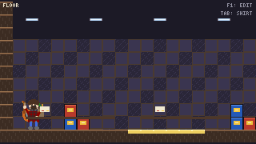
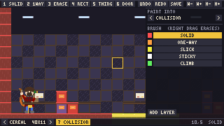

a pixel-art game engine in C, with its level editor built in
An engine for big pixel-art games that run in a web browser. The first game on it is Grocery Harrison. Its sprites are drawn in SPRITE//FORGE, and the engine reads those files directly, with no export step in between.
A 2D engine in C99 on sokol, for large pixel-art games that run in a browser today. The
first game on it is Grocery Harrison, whose cereal aisle
is being rebuilt here from the web version. Its sprites are drawn in
SPRITE//FORGE, and tunacan reads those .forge
files as they are, with no export step.
Both frames are the engine's own 320x180, captured from its web build. The editor is not a separate program: it is the running game with its tools drawn over the top, so the room you edit is the room you play.

Butter to slide on, sugar to stick to, a vine to climb, a parallax back shelf and lights, and a shelf lip drawn in front of Harrison. Tab changes his shirt through a recolour slot in the sprite.

The paint panel picks the layer, here the room's collision, and the brush: the five surfaces, or a tileset's tiles on an art layer. Undo covers everything, and an unchanged world saves back byte for byte.
Windows (D3D11), Linux (GL) and the web (WebGL2) today, each built and run. macOS is next, then the Wii through magnolia. iOS comes by way of hypnopompia, which ships the web build, so it needs no iOS backend of its own.
The engine part is done enough to build a game on. The vertical slice is that game.
A 2D engine by magmacrunch media for large pixel-art games that should run in a browser today and on other hardware later. C99 on sokol, compiled from source into each game.
The Tuna Can is where Texas Hold'Em Lava Dome practised and recorded, as did Audio Sound Paper and Dino Spumoni (the archive). "Tuna Can" is also a track and album by Tornado Massacre, a magmacrunch side project.
PolyForm Noncommercial 1.0.0 · Copyright 2026 magmacrunch media.
tunacan is developed in-house and is not publicly distributed.
For source access, licensing, or anything else, email info@magmacrunch.com.